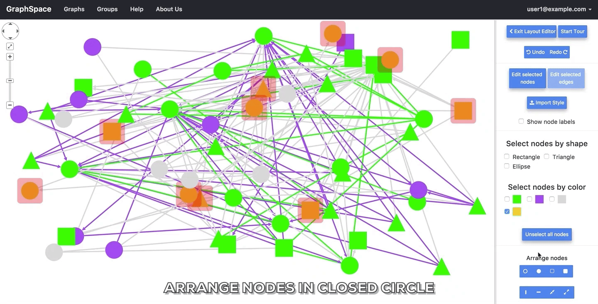
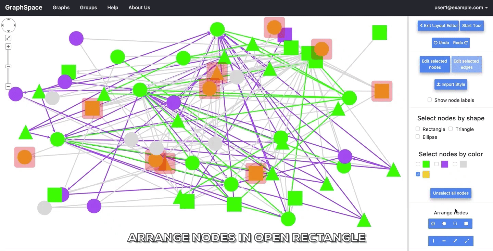
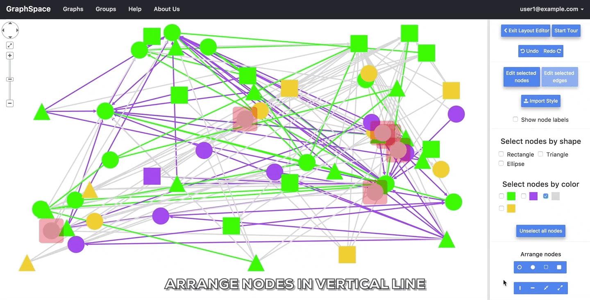

10. Editing Layouts¶
GraphSpace provides powerful tools for the selection, movement, and organization of multiple nodes in a graph. The user can activate this functionality by clicking the Use Layout Editor button.
10.1. Start Tour¶
The Start Tour button walks the user through all the features provided in the tool pallette. The Exit layout editor button gives a user the option to save the current layout and/or go back to the original view of the current graph. In the layout editor, the user may wield the tool pallette on the right hand side to quickly re-arrange the structure of the graph.
10.2. Show node labels¶
Unchecking the Show node labels checkbox takes a user of GraphSpace to a simplified view of the graph that hides node names.

10.3. Select by shape¶
The Select by shape section allows the user to choose nodes in the graph based on nodes shape style property. For example, if a user wishes to select all nodes that are rectangles or ellipses, he/she will select both “Ellipse” and “Rectangle” in the tool pallete.

10.4. Select by color¶
The Select by color section allows the user to choose nodes in the graph based on nodes background-color style property. For example, if a user wishes to select all nodes that are yellow or green, he/she will select both yellow and green.

10.5. Unselect All Nodes¶
A user may click on the Unselect All Nodes button to reset all selections.
10.6. Undo and Redo¶
The Undo and Redo buttons allow the user to undo or repeat all actions, including selection, editing and the arrange functions described below.

10.7. Arrange nodes¶
The Arrange nodes section allows a user to arrange all selected nodes into regions of different shapes. The following animation shows the arrangements of selected nodes that users may construct by clicking different buttons in this section.

|
 |
|  |

|
|  |

|

|

|